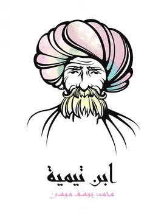

ابن تيمية

قراءة عربية أصلية محددة النطاق في الصفحات 11، 12 من ملف PDF المرتبط، وليست تلخيصا كاملا للكتاب. نناقش ما تدعمه هذه المقاطع فقط.
البيئة تصنع الرجال
يبدأ الباب الأول من قسم «عصره وحياته ومنهجه» باستشهاد قرآني: ﴿البلد الطيب يخرج نباته بإذن ربه﴾، ويقرر أن للبيئة الطبيعية والاجتماعية والسياسية أثرها الكبير في الإنسان سواء في ذلك البيئة، وقد تحكمت البيئة في حياة كثير من الناس ومصائرهم، وبخاصة الذين صبروا على ما فيها من عادات وتقاليد متأصلة فلم يعملوا للخروج عنها مع ما قد يكون فيها من ضلال وفساد، ومنهم من كانوا يقولون كما حكى الله عنهم: ﴿إنا وجدنا آباءنا على أمة وإنا على آثارهم مقتدون﴾. ولم يخرج عن أحكام البيئات الضالة إلا الأنبياء والرسل عليهم الصلاة والسلام، وكذلك المصلحون المجددون الذين ثاروا على ما ألفوا. بهذا المدخل يؤطر المؤلف دراسته لشيخ الإسلام ابن تيمية في عصره.
زاوية وحدود القراءة
قراءة الصفحتين ١١ و١٢ (مطلع الباب الأول)؛ النطاق تمهيد العصر، لا سيرة ابن تيمية.
الطبعة والقراءة
صدرت هذه النسخة عن مؤسسة هنداوي عام ٢٠١٥. جميع حقوق النشر الخاصة بتصميم هذا الكتاب وتصميم الغلاف مُرَخَّصة بموجب رخصة المشاع الإبداعي: نَسَبُ المُصنَّف، الإصدار ٤٫٠. جميع حقوق النشر الخاصة بنص العمل الأصلي خاضعة للملكية العامة.
تنزيل PDF المجاني ↓ القراءة والمصدر الرسمي ↗